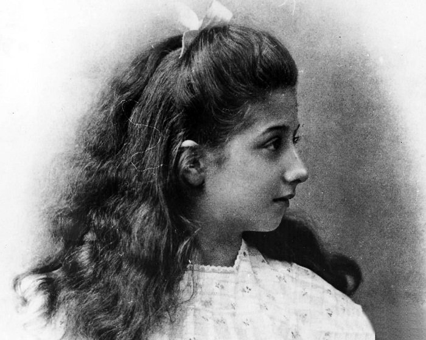
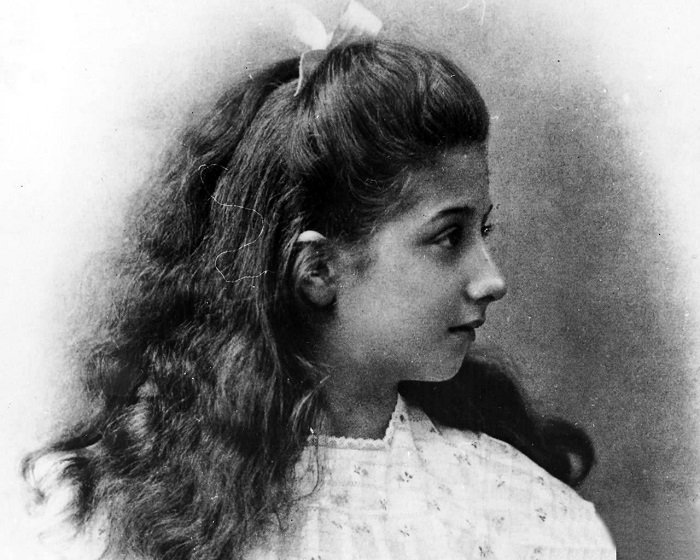
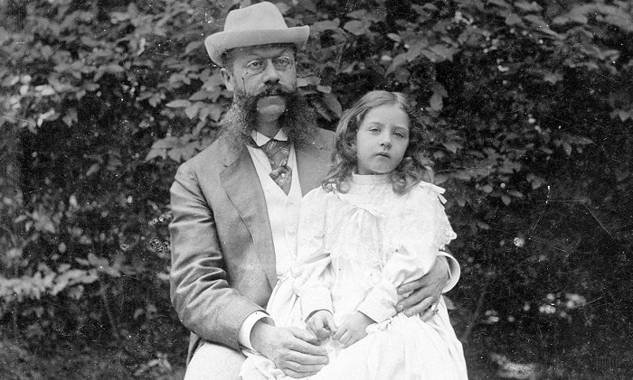
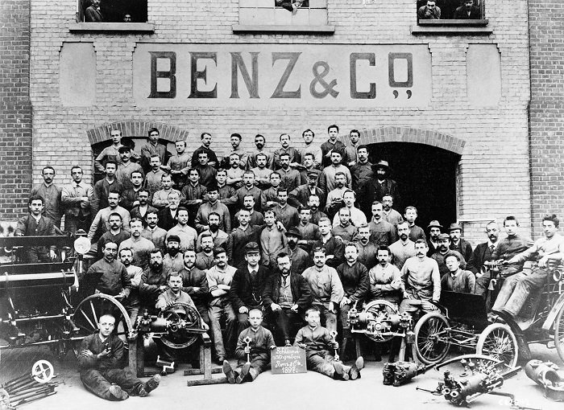

Мерседес Єллінек
Далекого 1900 року один відомий австрійський бізнесмен Еміль Єллінек, який був співвласником компанії, що випускала автомобілі, запропонував назвати нову партію автівок ім’ям його дев'ятирічної доньки — Мерседес
Існує думка, що автомобілі — це справа, яка стосується виключно чоловіків. А от і ні! Візьмемо хоча б усім відомий мерседес. Ти знаєш, що це авто отримало свою назву саме завдяки жінці?
Далекого 1900 року один відомий австрійський бізнесмен Еміль Єллінек, який був співвласником компанії, що випускала автомобілі, запропонував назвати нову партію автівок ім’ям його дев'ятирічної доньки — Мерседес
Взагалі, Мерседес — це лише прізвисько, яким називали дівчинку вдома. Справжнє її ім’я — Адріана Мануела Рамона Єллінек. У перекладі з іспанської Мерседес означає «милосердя, благодать», з латинської — «дар».
У 1901 році вийшов автомобіль Mercedes — модель 35 hp, яку Еміль Єллінек презентував на виставці в Парижі поряд із величезним портретом доньки. Так почалася «ера мерседеса».

Однак сама Мерседес не виявляла жодного інтересу до однойменних автівок. Її більше цікавили музика і співи. Усі ж почесті і слава від імені дістались автомобілям та... батькові дівчини. У 1903 році містер Єллінек взяв ім'я дочки як своє друге прізвище — Еміль Єллінек-Мерседес.
Як же розпочалася історія самого бренду «Мерседес»? Ще в 1890-х роках Еміль Єллінек познайомився з Готлібом Даймлером та Вільгельмом Майбахом. На той час вони уже мали свою компанію Daimler Motoren Gessellschaft(DMG)з виготовлення двигунів для човнів, аеропланів та автомобілів. Еміль став одним із директорів цієї компанії і почав продавати автівки в Австро-Угорщині, де він був тоді консулом.

Перше авто марки «Мерседес» було сконструйоване спеціально для перегонів. Містер Єллінек, під ім'ям «Мосьє Мерседес», сам неодноразово брав участь у перегонах і навіть отримував призові місця. Проте робив він це анонімно, оскільки робота дипломата не зовсім поєднувалась із захопленням автоперегонами.
У 1926 році з'являється торгова марка «Mercedes-Benz». DMG об'єдналася із фірмою Benz & Cie, яка займалася виготовленням автомобілів. В результаті з'являється нова компанія «Даймлер-бенц» і нова марка автомобілів —«Mercedes-Benz».
Новій компанії потрібен новий логотип. DMG використовували трипроменеву зірку — символ того, що їхні двигуни використовують на воді, на суші і в повітрі. Логотипом Benz & Cie спочатку було кермо, яке пізніше змінилось на лавровий вінок — символ перемоги. Два логотипи було вирішено об'єднати! Сьогодні «Мерседес» використовують зірку із трьома променями, обрамлену кільцем.